The complete guide: what it does, how to install and use every feature, how your data is handled, and how the project is built and published.
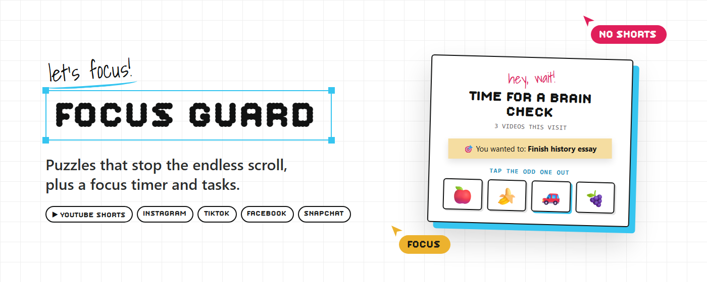
Focus Guard is a browser extension for Chrome and Microsoft Edge that helps you stop doomscrolling and get your real work done. It combines a scroll guard that interrupts short-video feeds with a short puzzle, and focus tools: a Pomodoro timer, tasks and quick todos.
Every few short videos, Focus Guard pauses the feed and shows a puzzle you must solve before you keep watching. Next to the puzzle it shows the task you said you wanted to work on. That pause is a moment to decide whether this is really how you want to spend your time. You can always choose to leave the feed instead.
| Area | What you get |
|---|---|
| Guard | Puzzles on YouTube Shorts (on by default), Instagram Reels, TikTok, Facebook Reels and Snapchat Spotlight |
| Puzzles | Six types: Math, Next number, Word scramble, Memory, Odd one out, Type it out. Fair rotation, rising difficulty |
| Focus | Pomodoro timer that runs with the popup closed, break tips, daily goal, Alt+Shift+F shortcut |
| Tasks | Tags, priorities, deadlines; create, edit, delete, sort, search, list or grid view; quick todos |
| Insights | Levels and XP, streak, Focus Garden, 7-day charts of focus minutes against videos watched |
| Privacy | No account, no server, no tracking, no ads, no network requests. Everything stays in your browser |
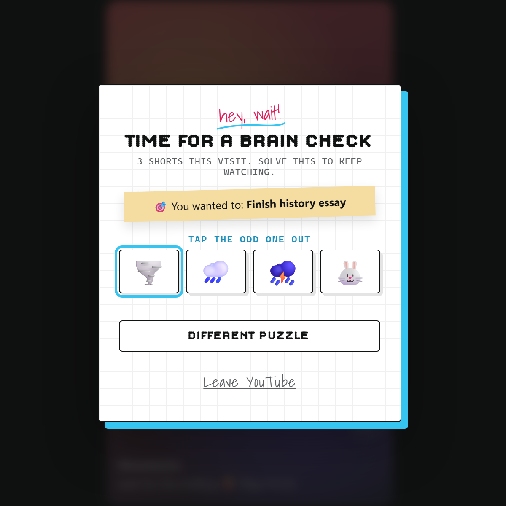
Focus Guard 2.5.2 has been submitted to Microsoft Edge Add-ons. Once it is approved, it is available at:
https://microsoftedge.microsoft.com/addons/detail/pheoidgkenchblmfbkkleecljipfddcl
Until Microsoft approves the listing, the link shows "not found". That is normal. Use developer mode below in the meantime.
chrome://extensions in Chrome, or edge://extensions in Edge.src folder inside the project.Click the reload icon on the extension's card. If you forget, the popup shows an Update ready banner with a one-click reload. Open tabs on guarded sites get the updated guard automatically.
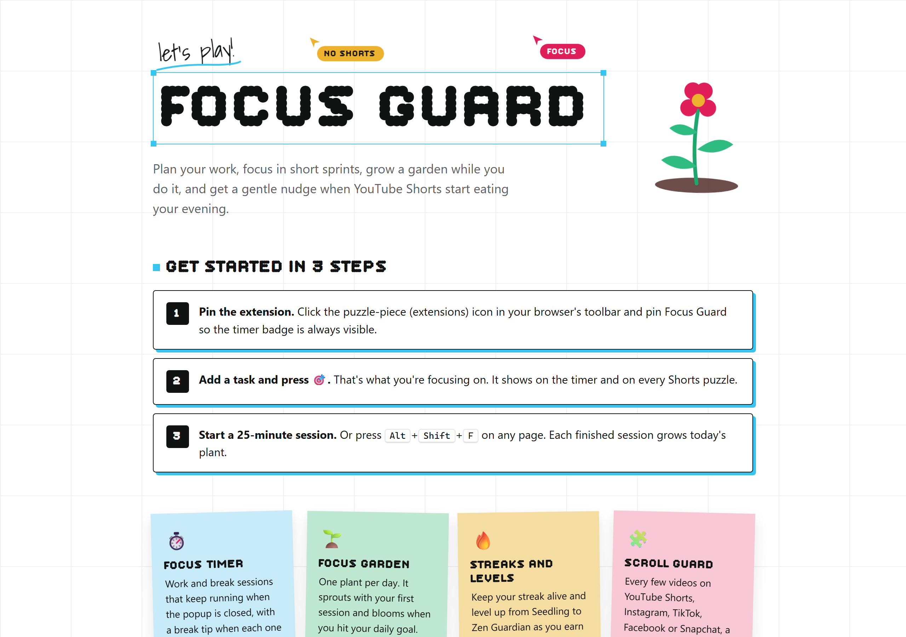
The guard counts the short videos you watch and interrupts the feed with a puzzle. Solve it to continue, ask for a different puzzle, or leave the feed.
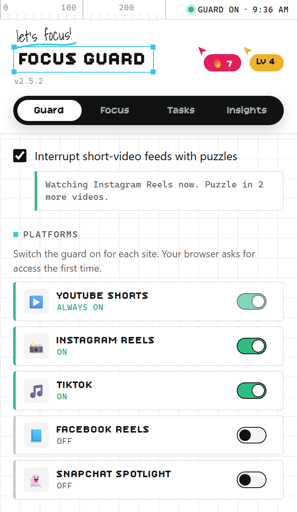
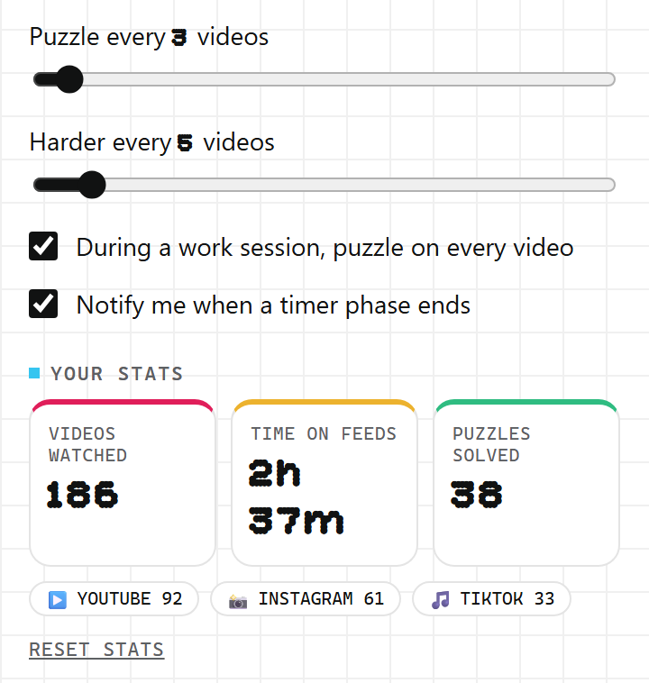
| Platform | Where it runs | How a new video is detected |
|---|---|---|
| ▶️ YouTube Shorts | youtube.com/shorts/… | The address changes per video. On by default |
| 📸 Instagram Reels | instagram.com/reels/… | The address changes per reel |
| 🎵 TikTok | tiktok.com/foryou, /@user/video/… | On the For You feed the address stays the same, so the guard watches which video fills the screen |
| 📘 Facebook Reels | facebook.com/reel/… | The address changes per reel |
| 👻 Snapchat Spotlight | snapchat.com/@user/spotlight/… | The address changes per video |
Switch platforms on in Guard → Platforms. A site that is switched on but not yet allowed shows Needs site access with an Allow button. Switching a site off removes the access again.
| Setting | Default | Range | What it does |
|---|---|---|---|
| Guard on/off | On | — | Master switch for every platform |
| Puzzle every | 3 videos | 1–50 | How many videos you can watch between puzzles |
| Harder every | 5 videos | 1–50 | How many videos until puzzles get one level harder (up to level 6) |
| Strict during focus | On | — | During a work session, every video asks for a puzzle |
| Notify me | On | — | Shows a notification when a focus or break period ends |
| Puzzle types | All six | At least one | Which puzzles can appear (see chapter 4) |
The line under the on/off switch in the Guard tab tells you what the guard sees:
The Guard tab shows all-time totals: videos watched, time spent on short videos and puzzles solved, plus a count per platform.
Six kinds of puzzle, all getting harder the more videos you watch. Turn each on or off in the Guard tab (at least one stays on) and press ▶ Try to play a demo. Demo solves don't count towards your stats.
| Type | What you do | Gets harder by |
|---|---|---|
| ➗ Math | Solve 7 + 3 × 2 using normal operator precedence | More operations |
| 🔢 Next number | Continue 3, 7, 11, 15, ? | Bigger steps, then multiplying (from level 3) |
| 🔤 Word scramble | Unscramble C S U O F → FOCUS (any letter case) | Longer words |
| 🧠 Memory | Digits show for 3 seconds, then you type them back | More digits (4 to 9) |
| 🧩 Odd one out | Tap the emoji that doesn't belong | 5 choices instead of 4 |
| ⌨️ Type it out | Type a short motivating phrase exactly (pasting is blocked) | Longer phrases |
Selected types come in a shuffled rotation, like drawing cards from a bag. You get every selected type once before any type repeats, and never the same type twice in a row. The rotation is saved, so it carries on across tabs, page reloads and platforms.
Difficulty starts at level 1 on each visit to a feed and rises by one level every Harder every videos (5 by default), up to level 6. Scrolling longer means harder puzzles, which is exactly the point.
If you keep breezing through puzzles, lower Harder every or switch off the easier types. If you want gentler reminders, raise Puzzle every.
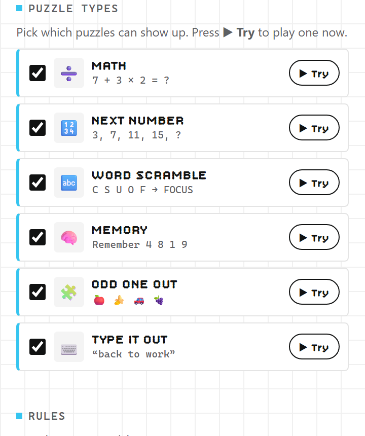
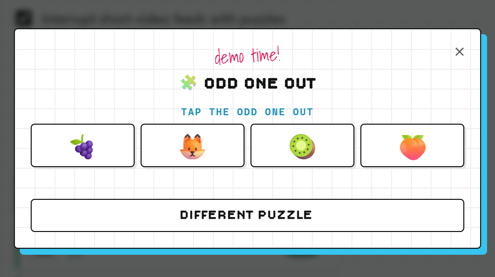
Work in focused blocks with short breaks in between. The timer runs in the background, so it keeps going when the popup is closed.
chrome://extensions/shortcuts or edge://extensions/shortcuts.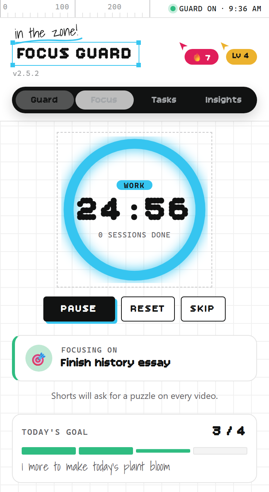
| Setting | Default | Range |
|---|---|---|
| Work length | 25 minutes | 1–180 minutes |
| Break length | 5 minutes | 1–180 minutes |
| Daily goal | 4 sessions | 1–16 sessions |
| Notifications | On | Switch in Guard → Rules |
When a work session ends you get a notification with your progress towards today's goal and a break idea (stretch, drink water, look away from the screen). When the break ends, another notification calls you back to work.
If a session ends while the browser is closed, Focus Guard notices next time it starts and still records the finished session.
With Strict during focus on, every short video asks for a puzzle while a work session is running. Combined with the 🎯 reminder, that makes "just one quick video" much less tempting.
Tasks are sticky notes for real pieces of work. Quick todos are one-liners for small things.
Work · Study · Personal · Health · Other
High · Medium (default) · Low
Finished tasks always go last.
Press 🎯 on a task to focus on it. It appears on the Focus timer and on every puzzle overlay, so a scroll break always reminds you what you meant to do. With no pin, the puzzle shows your most important open task.
Simple one-line todos you can add, tick off and delete, for things too small to be a task. Up to 100 todos of up to 120 characters each.
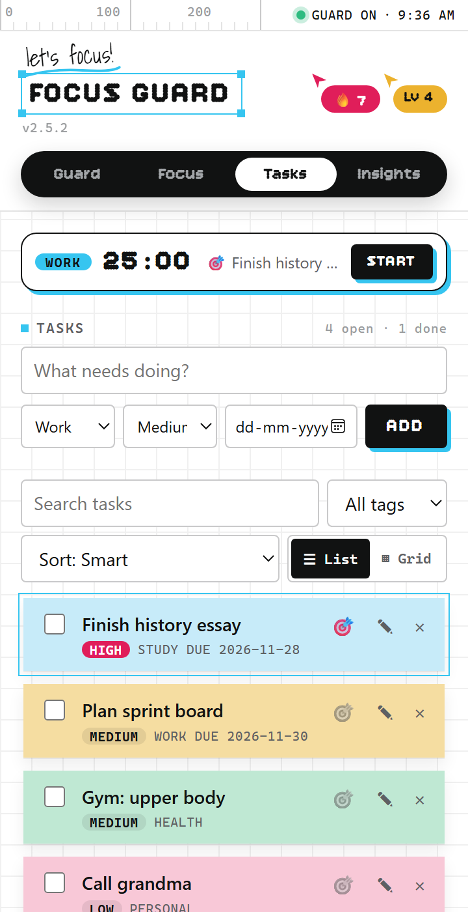
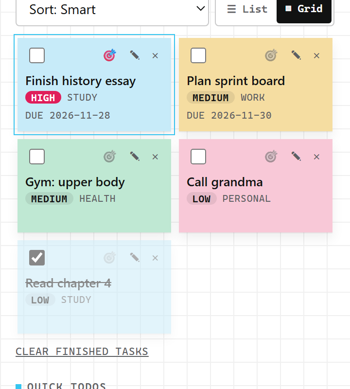
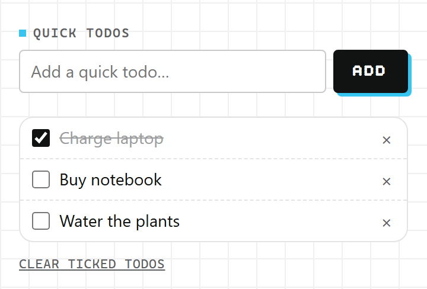
The Insights tab turns your progress into something you can see: a level, a streak, a garden and weekly charts.
| You earn | XP |
|---|---|
| A finished focus session | 10 |
| A finished task | 5 |
| A solved puzzle | 2 |
| Level | Title | XP needed |
|---|---|---|
| 1 | Seedling | 0 |
| 2 | Sprout | 50 |
| 3 | Sapling | 150 |
| 4 | Focused | 350 |
| 5 | Deep Worker | 700 |
| 6 | Flow Master | 1,200 |
| 7 | Zen Guardian | 2,000 |
XP comes from lifetime totals that are never trimmed, so your level never goes down.
| Feature | How it works |
|---|---|
| 🔥 Streak | Days in a row with at least one finished focus session. Today doesn't break it until the day is over |
| 🌱 Focus Garden | One plant per day for the last week. It sprouts with your first session and blooms when you reach your daily goal |
| 📊 Weekly charts | 7-day bars of focus minutes against short videos watched |
| 🗓 History | The daily log keeps the last 60 days |
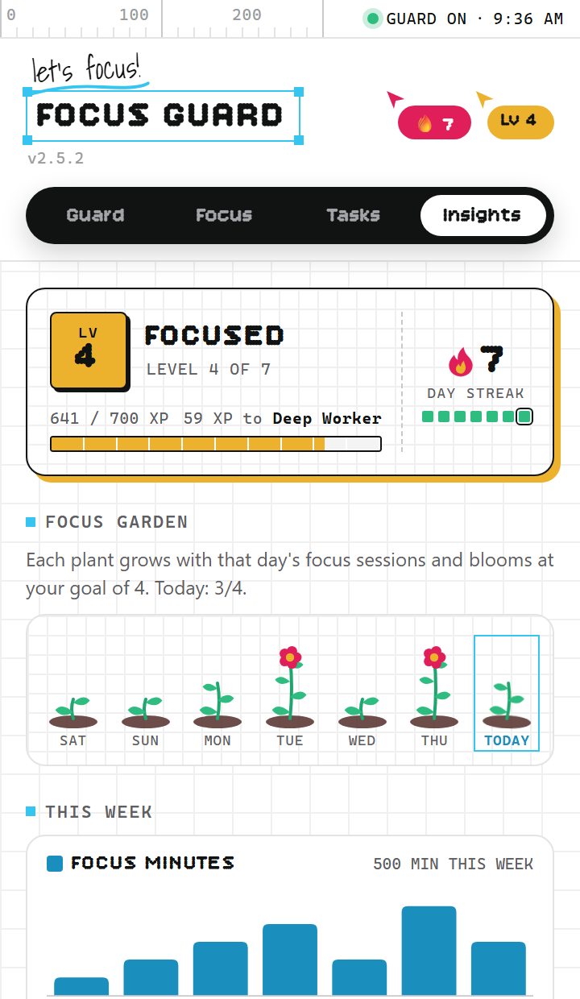
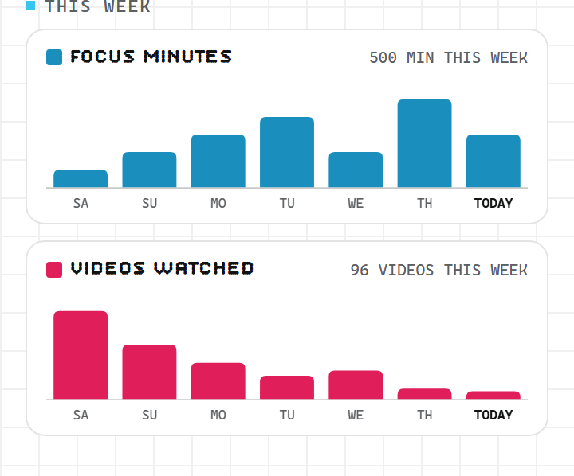
Focus Guard is private by design. There is no account, no server, no tracking and no ads.
fetch reads the extension's own manifest.json to power the "Update ready" banner. Fonts and icons are bundled.| Permission | Why it is needed |
|---|---|
| storage | Saves settings, tasks and stats locally |
| alarms | Ends focus and break periods on time while the popup is closed |
| notifications | Tells you when a focus or break period ends |
| scripting | Adds the guard to sites you switched on, and to tabs that were already open |
| youtube.com | Counts Shorts and shows the puzzle overlay |
| Optional sites | instagram.com, tiktok.com, facebook.com, snapchat.com: requested only when you switch that site on, removed when you switch it off |
Guard tabs and the popup send activity events to the background worker, which applies them one at a time. Nothing is lost when several tabs report at once, and a web page can't add focus sessions.
The full privacy policy is PRIVACY.md in the repository:
https://github.com/Vedant-S-Tattimani/CAPTCHA-Your-Attention-with-specify-todo-list/blob/main/PRIVACY.md
src/lib/platforms.js.Check which types are switched on in the Guard tab. With several on, the rotation gives each one before repeating any.
Check that Notify me when a timer phase ends is ticked in Guard → Rules, and that your operating system allows notifications from the browser (Windows: Settings → System → Notifications).
No. Everything runs and is stored locally.
No. Updates keep your local data. Only removing the extension deletes it.
Yes, at edge://extensions/shortcuts or chrome://extensions/shortcuts.
No. It's a desktop browser extension. The guard works on the desktop websites of each platform.
Plain JavaScript, Manifest V3, no build step and no dependencies. Pure logic lives in src/lib/ and is covered by unit tests.
| Path | Purpose |
|---|---|
| src/manifest.json | Manifest V3: permissions, content scripts, shortcut, background worker |
| src/background.js | Service worker: timer with alarms, badge, notifications, single-writer activity queue |
| src/platform-sync.js | Adds or removes the guard per platform and permission |
| src/lib/platforms.js | Supported sites, feed addresses, video detection |
| src/lib/puzzles.js | All six puzzle types, one shape, answer checking, rotation |
| src/lib/captcha.js | Math and number-sequence generators |
| src/lib/settings.js | Storage keys, settings validation, stats |
| src/lib/pomodoro.js | Timer state |
| src/lib/tasks.js, todos.js | Task and todo operations, sorting, filtering |
| src/lib/progress.js | Daily log, streaks, XP, levels, garden growth |
| src/lib/activity.js | Applies activity events to stats, daily log and lifetime totals |
| src/content/ | The guard on each site, the puzzle view and overlay styles (Shadow DOM) |
| src/popup/ | Toolbar popup: Guard, Focus, Tasks and Insights tabs |
| src/welcome/ | First-install welcome page |
| src/fonts/, src/icons/ | Bundled fonts with their OFL licences; original puzzle-piece icons |
| tests/ | Unit tests (Node's built-in test runner) |
| tools/ | Packaging, zip writer, store image renderer, preview server |
| store/ | Store listing text, images and their HTML designs |
| Command | What it does |
|---|---|
| npm test | Runs the unit tests (Node 22 or newer, nothing to install) |
| npm run package | Checks the manifest and writes dist/focus-guard-<version>.zip with manifest.json at the top level |
| node tools/preview-server.js | Serves the popup preview on port 5178 for screenshots |
| tools/store-images.ps1 | Renders icons, logo, promo tiles and screenshots with headless Edge |
Regenerate the store images (needs Edge installed, and the preview server running for screenshots):
powershell -ExecutionPolicy Bypass -File tools/store-images.ps1 -PreviewUrl http://127.0.0.1:5178
version in src/manifest.json (e.g. 2.5.2 → 2.5.3).npm test, then npm run package.| Field | Value |
|---|---|
| Display name | Focus Guard |
| Version | 2.5.2 |
| Status | Submitted, in review (up to 7 business days) |
| Category | Productivity |
| Store ID | 0RDCKFT84RZ8 |
| CRX ID | pheoidgkenchblmfbkkleecljipfddcl |
| Store link | microsoftedge.microsoft.com/addons/detail/ pheoidgkenchblmfbkkleecljipfddcl |
| Short description | Stop doomscrolling with puzzles on YouTube Shorts, Instagram, TikTok, Facebook and Snapchat. Plus focus timer and tasks. |
| Search terms | doomscrolling, focus, pomodoro, youtube shorts blocker, productivity, screen time, reels blocker |
| Field | File (store/images/) | Size |
|---|---|---|
| Logo | logo-300.png | 300 × 300 |
| Small promo tile | promo-tile-440x280.png | 440 × 280 |
| Large promo tile | promo-large-1400x560.png | 1400 × 560 |
| Screenshots | screenshot-1-guard … screenshot-4-insights.png | 1280 × 800 |
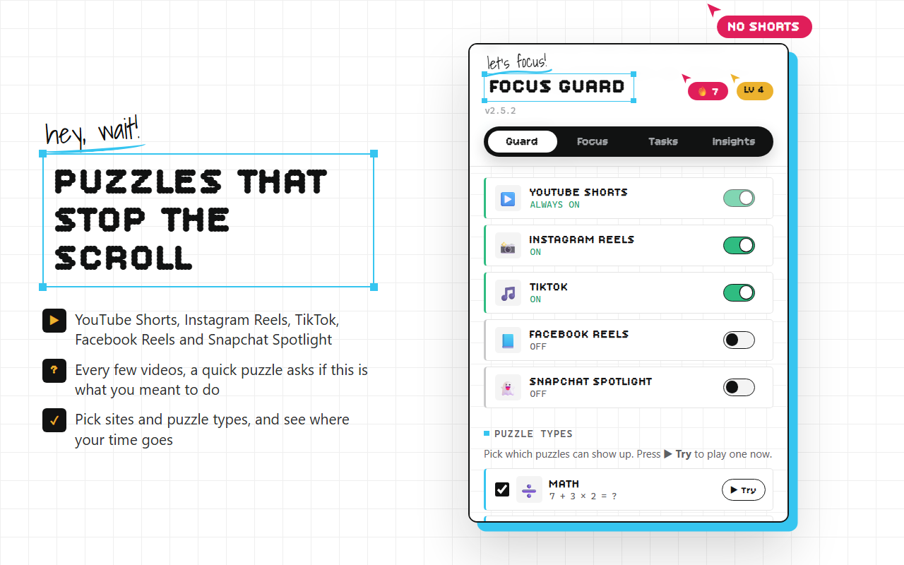
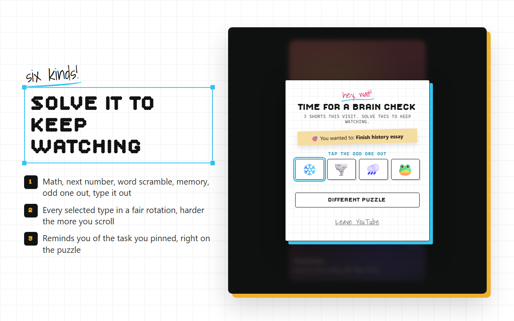
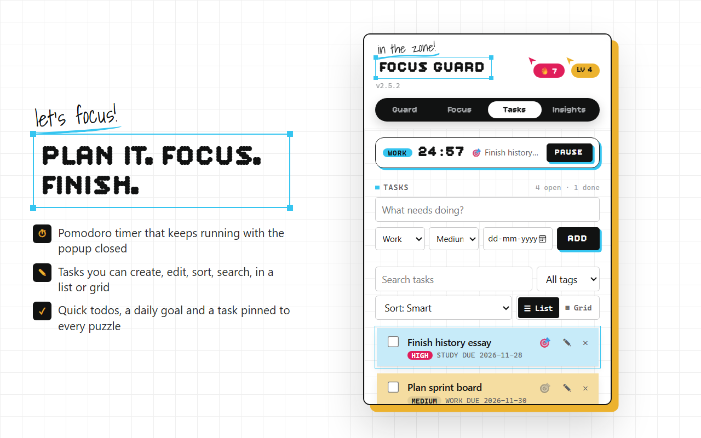
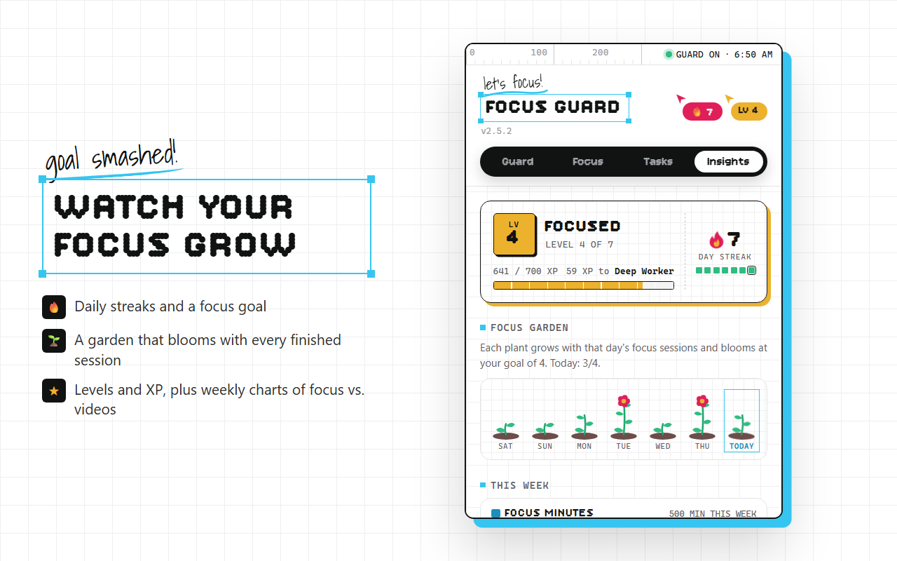
Focus Guard is open source under the MIT licence, © 2026 Vedant-S-Tattimani. Licence texts required by bundled third-party components (the fonts, and earlier MIT-licensed code) are kept in THIRD_PARTY_NOTICES.txt and src/fonts/.
github.com/Vedant-S-Tattimani/CAPTCHA-Your-Attention-with-specify-todo-list